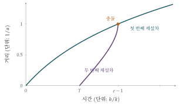

STEP III Specimen paper, 문제 11
계속 읽기 전에 문제를 먼저 읽어 보자. 문제는 STEP Support Programme의 문제 데이터베이스에 있다: step.maths.org/questions/spec-s3-q11
도입
눈이 일정하게 내리고 있다. 제설차(snowplough) 한 대가 길을 따라 출발하는데, 만나는 눈이 깊어질수록 속도가 느려진다. 조금 뒤에 두 번째 제설차가 이미 치워진 길을 따라 뒤쫓아 간다. 두 번째 제설차는 첫 번째 제설차가 지나간 뒤에 쌓인 눈만 만나므로 눈이 더 얕고, 따라서 더 빨리 달리며 결국 앞차를 따라잡는다. 언제 따라잡을까?
이 문제는 Ralph Agnew가 1942년에 발표한 유명한 문제의 변형으로, 그 문제는 미분방정식(differential equation)에서 가장 잘 알려진 퍼즐 가운데 하나가 되었다. 이 문제의 묘미는 두 번째 제설차의 속도가 첫 번째 제설차가 각 지점을 언제 지나갔는지에 따라 달라진다는 데 있다. 그래서 소문항 (i)의 해가 소문항 (ii)의 방정식에 들어간다. 그리고 이 방정식은 “거꾸로”, 즉 시간을 거리의 함수로 쓸 때 가장 깔끔해진다.
시작하기 전에
첫 번째 제설차는 시각 \(t\)에 깊이 \(h + kt\)의 눈을 만난다. 이 제설차의 속력은 얼마인가? \(x\)를 \(t\)의 함수로 구하는 것과 \(t\)를 \(x\)의 함수로 구하는 것 가운데 어느 쪽이 더 쉬운가?
속력은 \(\frac{\mathrm{d}x}{\mathrm{d}t} = \frac{k}{\alpha(h + kt)}\)이다. 이 식은 변수분리(separation of variables)가 깔끔하게 된다. 뒤집으면 \(\frac{\mathrm{d}t}{\mathrm{d}x} = \frac{\alpha(h + kt)}{k}\)가 되는데, 이는 \(t\)를 \(x\)의 함수로 보는 간단한 선형(linear) 방정식이다. 첫 번째 제설차에 대해서는 어느 방법이든 통하지만, 두 번째 제설차에 대해서는 뒤집은 형태가 꼭 필요하다.
차근차근 풀기
단계 1 첫 번째 제설차
\(\frac{\mathrm{d}t}{\mathrm{d}x} = \alpha\bigl(\frac hk + t\bigr)\)로부터 양 \(\frac hk + t\)는 \(x\)에 대해 지수적으로 증가한다: \(\frac hk + t = Ce^{\alpha x}\). \(x = 0\)일 때 \(t = 0\)이므로 \(C = \frac hk\)이고 \[t_1(x) = \frac hk\bigl(e^{\alpha x} - 1\bigr). \qed\] 첫 번째 제설차는 지수적으로 느려진다. 같은 거리를 가는 데 걸리는 시간이 지수적으로 늘어난다.
단계 2 두 번째 제설차의 방정식
두 번째 제설차가 시각 \(t\)에 위치 \(y\)에 도달한다. 그곳의 눈 깊이는 얼마인가? (첫 번째 제설차가 지나간 직후의 깊이는 얼마였는가?)
첫 번째 제설차는 시각 \(t_1(y)\)에 위치 \(y\)의 눈을 모두 치웠다. 그 뒤로 눈이 비율 \(k\)로 쌓였으므로, 시각 \(t\)의 깊이는 \(z = k\bigl(t - t_1(y)\bigr)\)이다. 따라서 두 번째 제설차의 속력은 \[\frac{\mathrm{d}y}{\mathrm{d}t} = \frac{k}{\alpha k\bigl(t - t_1(y)\bigr)} = \frac{1}{\alpha\bigl(t - t_1(y)\bigr)},\] 이고, 이를 뒤집으면 \[\frac1\alpha\frac{\mathrm{d}t}{\mathrm{d}y} = t - \frac hk\bigl(e^{\alpha y} - 1\bigr). \qed\]
단계 3 풀기
이 식은 \(t\)에 대해 선형이다: \(\frac{\mathrm{d}t}{\mathrm{d}y} - \alpha t = -\frac{\alpha h}{k}(e^{\alpha y} - 1)\). 어떤 적분인자(integrating factor)를 쓰면 되는가? 초기 조건은 무엇인가?
\(e^{-\alpha y}\)를 곱하면 \[\frac{\mathrm{d}}{\mathrm{d}y}\bigl(te^{-\alpha y}\bigr) = -\frac{\alpha h}{k}\bigl(1 - e^{-\alpha y}\bigr), \qquad te^{-\alpha y} = -\frac{\alpha h}{k}y - \frac hke^{-\alpha y} + C.\] 두 번째 제설차는 \(t = T\)에 \(y = 0\)에서 출발하므로 \(T = -\frac hk + C\)이고, 따라서 \(C = T + \frac hk\)이다. 다시 \(e^{\alpha y}\)를 곱하고 정리하면 \[t_2(y) = \frac hk\bigl(e^{\alpha y} - 1\bigr) + \Bigl(T - \frac{\alpha hy}{k}\Bigr)e^{\alpha y}. \qed\] (문제에서 요구하는 대로 확인하려면, 미분하여 대입하면 된다. 항들을 정리하면 \(\alpha\bigl(t - t_1(y)\bigr)\)가 된다.)
단계 4 충돌
두 제설차는 같은 시각에 같은 지점에 도달할 때 충돌한다. \(t_2(y)\)와 \(t_1(y)\)를 비교해 보자.
차이 \(t_2(y) - t_1(y) = \bigl(T - \frac{\alpha hy}{k}\bigr)e^{\alpha y}\)는 위치 \(y\)에서 두 제설차 사이의 시간 간격이다. 이 간격은 \[y = \frac{kT}{\alpha h}. \qed\] 일 때 0으로 줄어든다. 그 지점에서 두 번째 제설차가 첫 번째 제설차에 도달한다. 그 앞의 눈 깊이는 0이고, 이 모형에서 속력은 무한대가 된다(그림 11.13.1).

돌아보기
방정식을 뒤집어라. \(t\)를 위치의 함수로 보면 두 방정식이 모두 선형이었다.
한 해가 다음 문제에 쓰인다. 첫 번째 제설차의 시간표 \(t_1(y)\)가 두 번째 제설차의 방정식에 나타났다.
두 번 풀지 말고 비교하라. 충돌 조건은 간단한 인수를 가진 차이 \(t_2 - t_1\)에서 나왔다.
숨은 수학
Agnew의 제설차
Ralph Palmer Agnew의 1942년 교과서 Differential Equations에 실린 원래 문제는 이렇다. 어느 날 아침 눈이 일정하게 많이 내리기 시작한다. 제설차 한 대가 정오에 출발하여 첫 한 시간 동안 \(2\)마일, 두 번째 한 시간 동안 \(1\)마일을 간다. 눈은 언제 내리기 시작했는가? 제설차의 속력은 눈 깊이에 반비례하고, 눈 깊이는 눈이 내리기 시작한 뒤로 흐른 시간에 비례한다. 답(아래 연습문제)에는 황금비(golden ratio)가 나온다. 눈은 정오보다 약 \(37\)분 전에 내리기 시작했다. 이 문제처럼 제설차가 두 대인 변형은 그 뒤에 나왔다.
전달되는 정보
두 번째 제설차의 운동은 도로에 기록된 이력, 즉 각 지점이 마지막으로 치워진 시각에 따라 정해진다. 이는 기억(memory)을 가진 계의 간단한 예로, 한 장소의 상태가 그곳에서 앞서 일어난 일에 따라 달라진다. 교통 흐름, 빙하의 움직임, 산불의 확산이 모두 이런 성격을 띠며, 그 수학인 1계 편미분방정식(partial differential equation)과 그 특성곡선(characteristics)의 이론은 대학 2학년의 표준 주제이다. 시간을 위치의 함수로 쓰는 발상(“전선이 이곳에 언제 도착하는가?”)은 바로 이런 문제에 쓰이는 도착 시간(arrival times) 방법이다.
사고 기술
미분방정식은 변수의 역할을 바꾸면 훨씬 간단해질 수 있다. 변화율이 어떤 장소에서 무언가가 일어난 시각에 따라 달라진다면, 시간을 장소의 함수로 써라.
여기서 두 방정식은 모두 \(t(y)\)에 대해 쓰자 선형이 되었다. 대학에서는 어느 변수를 독립변수(independent variable)로 삼을지 고르는(그리고 편리할 때 바꾸는) 자유를 끊임없이 활용한다. 유체역학(fluid mechanics)의 호도그래프 방법(hodograph method)부터 기하학에서 호의 길이(arc length)를 매개변수(parameter)로 쓰는 것까지 그 예는 다양하다.
더 도전하기
Agnew의 문제. 정오 이전의 알 수 없는 시각에 눈이 일정한 비율로 내리기 시작한다. 속력이 눈 깊이에 반비례하는 제설차가 정오에 출발하여 첫 한 시간 동안 \(2\)마일, 두 번째 한 시간 동안 \(1\)마일을 간다. 눈이 정오보다 \(t_0\)시간 전에 내리기 시작했다면 \(\bigl(1 + \frac{2}{t_0}\bigr)^2 = \bigl(1 + \frac{1}{t_0}\bigr)^3\)임을 보이고, 이로부터 \(\frac{1}{t_0}\)이 황금비임을 이끌어 낸 뒤, 눈이 언제 내리기 시작했는지 구하여라.
확인. \(t_2(y)\)가 소문항 (ii)의 미분방정식을 만족함을 미분하여 확인하여라.
시간 간격. \(kT > h\)이면 시간 간격 \(t_2(y) - t_1(y)\)가 처음에는 증가하다가 감소하여 0이 됨을 보이고, 간격이 가장 큰 곳을 구하여라. \(kT \leq h\)이면 어떻게 되는가? 이를 해석하여라.
제설차 세 대. 세 번째 제설차가 시각 \(2T\)에 출발한다. 그 운동의 방정식을 써라. 세 번째 제설차는 두 번째 제설차가 첫 번째 제설차를 따라잡기 전에 두 번째 제설차를 따라잡는가, 아니면 그 뒤에 따라잡는가?
더 읽을거리
Ralph Palmer Agnew, Differential Equations (McGraw-Hill, 1942). 원래의 제설차 문제가 실린 책이다.
George Simmons, Differential Equations with Applications and Historical Notes (CRC Press). 여러 문제와 함께 제설차 문제를 다룬다.
Richard Haberman, Mathematical Models (SIAM). 교통 흐름과 특성곡선을 쉽게 접근할 수 있는 수준으로 다룬다.